Poc Openshift On Windows Enviroment with CRC
Setting Up OpenShift on Windows with CodeReady Containers (CRC)
If you're a developer or IT professional looking to experiment with Red Hat OpenShift on a Windows environment, CodeReady Containers (CRC) is your gateway to a streamlined, local OpenShift setup. CRC is designed to provide a minimal OpenShift cluster for development and testing purposes on your local machine. Here’s a comprehensive guide to get you started.
What is CodeReady Containers (CRC)?
CodeReady Containers is a tool provided by Red Hat that allows you to run OpenShift in a local environment. It provides a single-node OpenShift cluster that’s suitable for development and testing. This setup is ideal for developers who want to experience the full OpenShift platform without setting up a full-blown cluster.
Prerequisites
Before you begin, ensure that you have the following prerequisites in place:
-
Windows 10/11 (64-bit) or Windows Server 2019/2022: CRC supports these versions of Windows.
-
Virtualization Support: Ensure that virtualization is enabled in your BIOS/UEFI settings.
-
Hardware Requirements:
-
CPU: 4 cores (recommended)
-
RAM: 8 GB (minimum); 16 GB (recommended)
-
Disk: 35 GB of free space (recommended)
Installation Steps
1. Install WSL 2 (Windows Subsystem for Linux)
CRC requires WSL 2 to run. To install WSL 2:
- Open PowerShell as an administrator and run:
wsl --install
-
Restart your machine if prompted.
-
Verify the installation by running:
wsl --list --verbose
Ensure that WSL 2 is the default version.
2. Install a Linux Distribution
You need a Linux distribution for WSL 2. The most common choice is Ubuntu.
-
Open the Microsoft Store, search for "Ubuntu", and install it (e.g., Ubuntu 20.04).
-
Launch Ubuntu from the Start menu and complete the setup.
3. Install Virtualization Software
CRC uses a virtualization solution. Install Hyper-V or VirtualBox:
-
For Hyper-V:
-
Open PowerShell as an administrator and run:
powershell dism.exe /Online /Enable-Feature:Microsoft-Hyper-V /All -
Restart your machine.
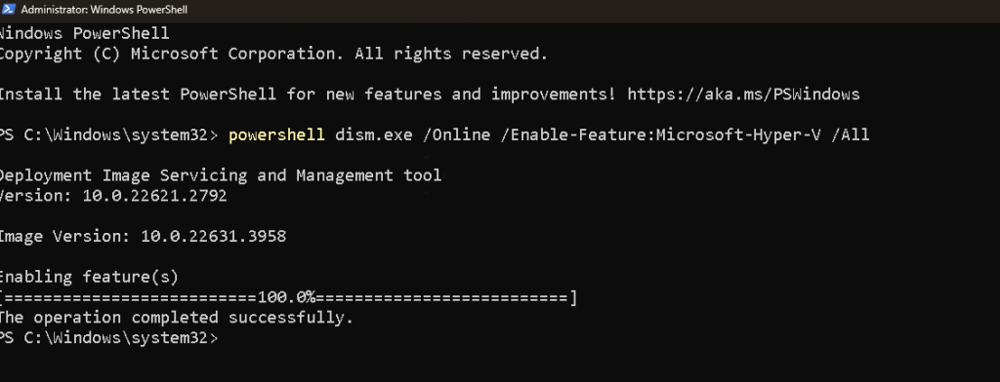
-
For VirtualBox (if you prefer not to use Hyper-V):
-
Download and install VirtualBox from the official website.
4. Download and Install CodeReady Containers
-
Go to the Red Hat CodeReady Containers download page and download the CRC binary for Windows.
-
Extract the downloaded ZIP file to a directory of your choice.
-
Open a Command Prompt or PowerShell window and navigate to the extracted directory.
-
Run the installer script:
.\crc-windows-amd64.exe setup
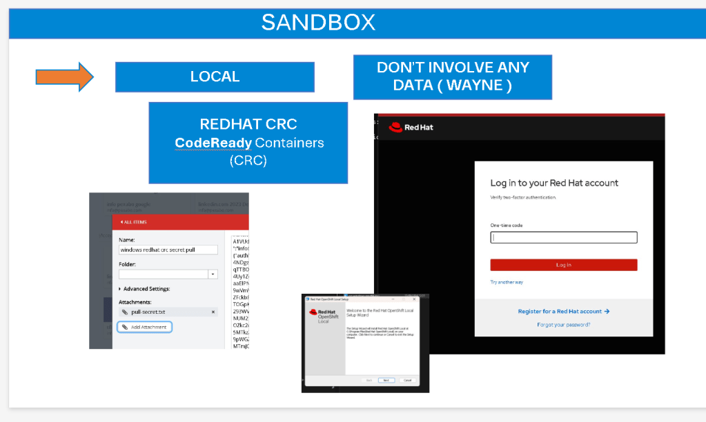
- Start and Configure CRC
- Initialize CRC with the following command:
.\crc-windows-amd64.exe start
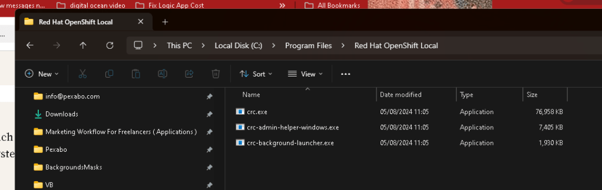
This command will download and set up the OpenShift cluster, which may take some time depending on your internet connection and system performance.
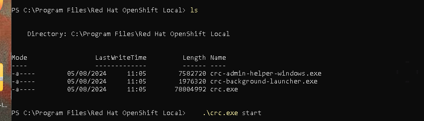
- Once the setup is complete, you will receive the OpenShift cluster's URL, and credentials to log in.
The error message you're encountering suggests that the crc daemon is not running or cannot be reached, which is necessary for starting Red Hat OpenShift Local (CRC). This issue can occur due to several reasons, such as the daemon not being started automatically, a problem with the installation, or configuration issues.
Here are some steps you can try to resolve the issue:
1. Manually Start the CRC Daemon
-
First, try to manually start the CRC daemon:
.\crc.exe daemon -
After starting the daemon, try running
.\crc.exe startagain.
2. Check for Proper Installation
-
Ensure that the installation of Red Hat OpenShift Local (CRC) is complete and correct. You can try reinstalling it if necessary.
-
Make sure that all required dependencies are installed and configured properly.
3. Run as Administrator
-
Run the terminal or command prompt as an administrator. Right-click on the terminal or command prompt and choose "Run as administrator."
-
Try running the
.\crc.exe startcommand again.
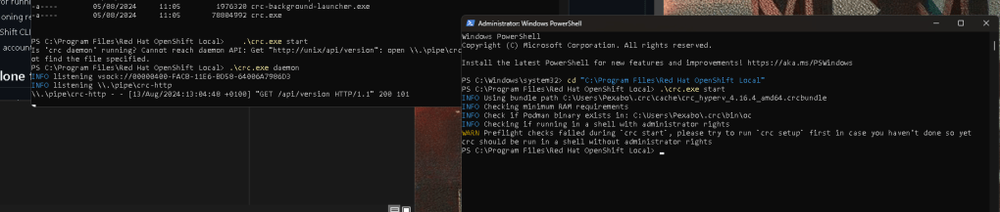
Setup first > no admin run
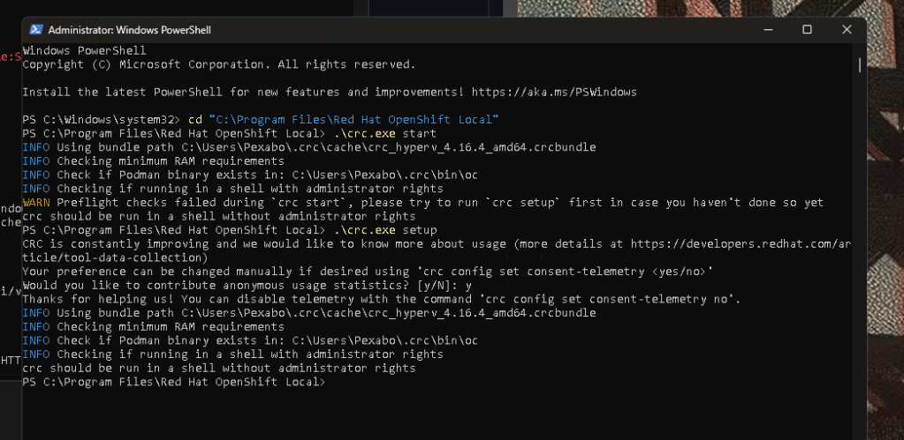
4.
Check Windows Services
- Make sure that the required services are running on your system. Open the Services management console (
services.msc) and look for any services related to CRC or virtualization that might need to be started.
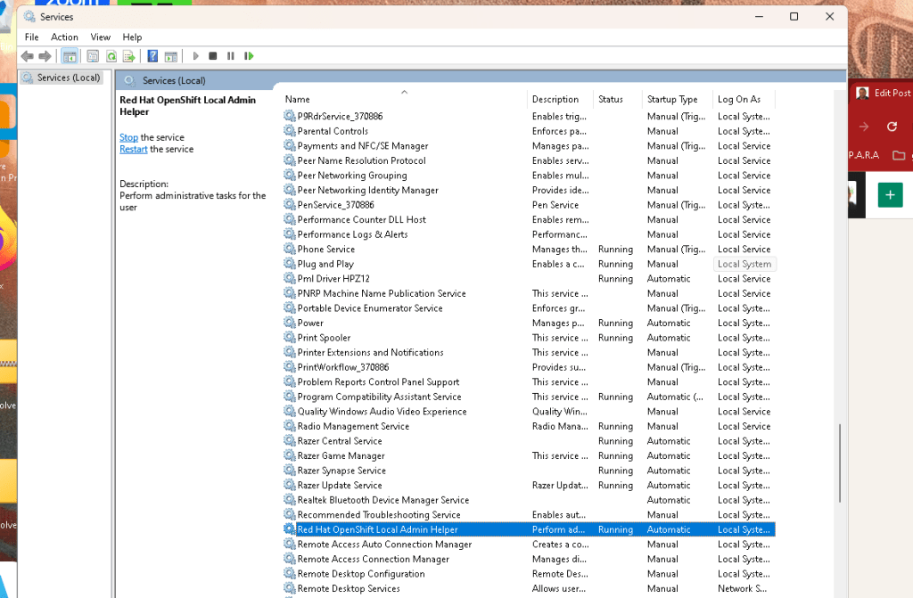
maybe ubuntu run expedted but it is an exe
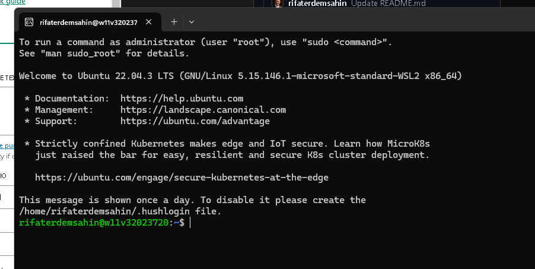
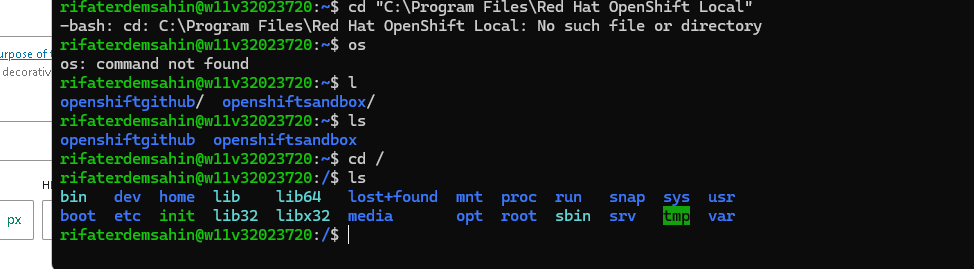
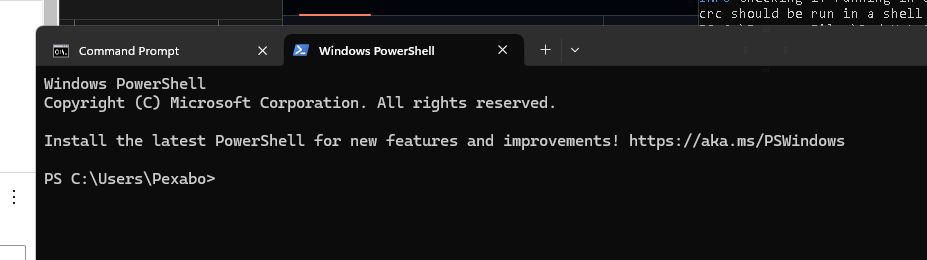
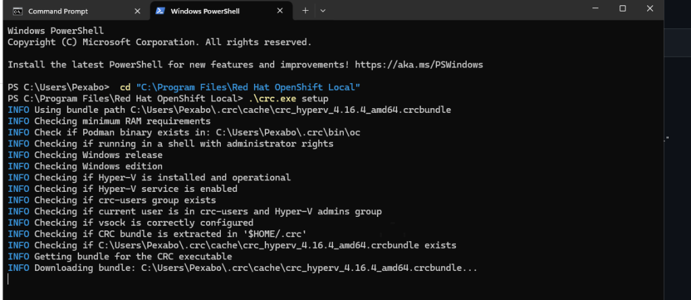
PS C:\Program Files\Red Hat OpenShift Local> .\crc.exe daemon
INFO listening vsock://00000400-FACB-11E6-BD58-64006A7986D3
INFO listening \\.\pipe\crc-http
\\.\pipe\crc-http - - [13/Aug/2024:13:04:48 +0100] "GET /api/version HTTP/1.1" 200 101
Verify Environment Variables
- Ensure that the environment variables required by CRC are set correctly. Sometimes the
PATHvariable might not be configured correctly after installation.
6. Firewall/Antivirus
- Check if your firewall or antivirus software is blocking the CRC daemon. Temporarily disable them and see if it resolves the issue.
7. Logs and Detailed Error Information
-
You can also check the CRC logs for more detailed error information:
.\crc.exe start --log-level debug -
Reviewing the logs might provide more insight into what is causing the issue.
8. Update CRC
- Ensure that you are using the latest version of CRC. If not, consider updating to the latest version.
9. Check for Conflicts
- Sometimes, other virtualization software (e.g., Docker Desktop, VirtualBox) can conflict with CRC. Make sure there are no conflicts.
10. System Reboot
- A simple system reboot might help if a required process or service didn't start correctly during the initial boot.
If the problem persists after trying these steps, you may need to consult the Red Hat OpenShift Local documentation or seek further assistance from Red Hat support.
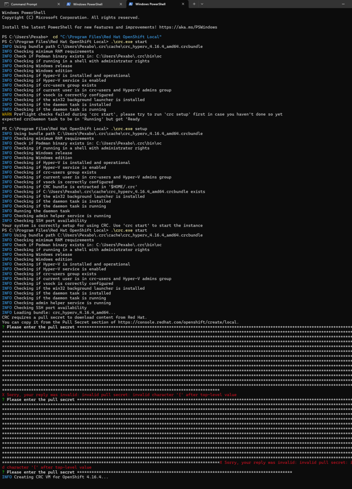
6. Access the OpenShift Cluster
-
To access the OpenShift web console, open your web browser and navigate to the provided URL.
-
Use the credentials provided during the CRC setup to log in.
-
To interact with OpenShift from the command line, use the
ocCLI tool provided by CRC. To log in to the cluster usingoc, run:
.\crc-windows-amd64.exe oc login
Troubles
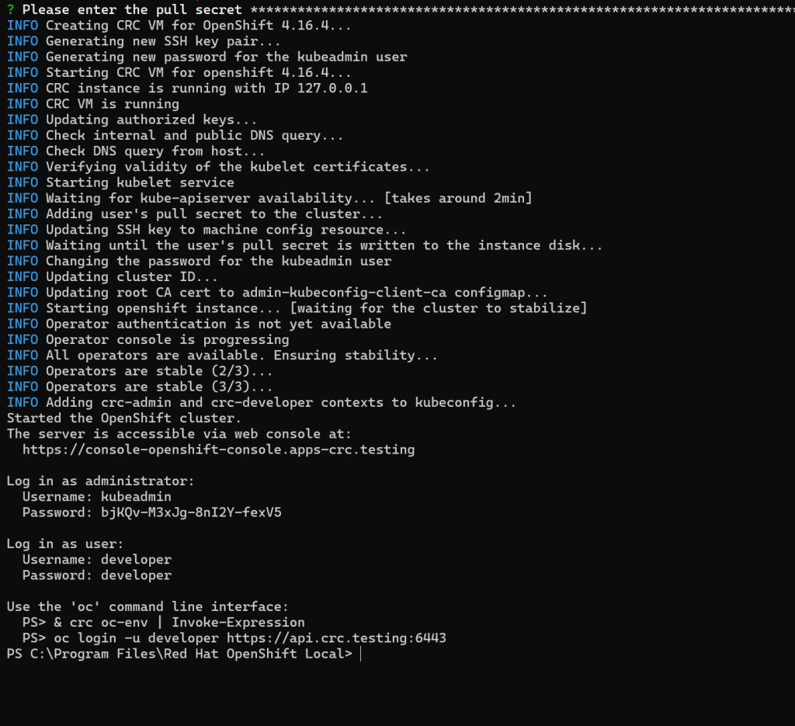
hooting Tips
-
Virtualization Issues: Ensure that virtualization is enabled in your BIOS/UEFI settings. If using Hyper-V, ensure that it’s properly configured.
-
WSL 2 Issues: Verify that WSL 2 is correctly installed and set as the default version.
-
Performance: Ensure your machine meets the hardware requirements for CRC to run efficiently.
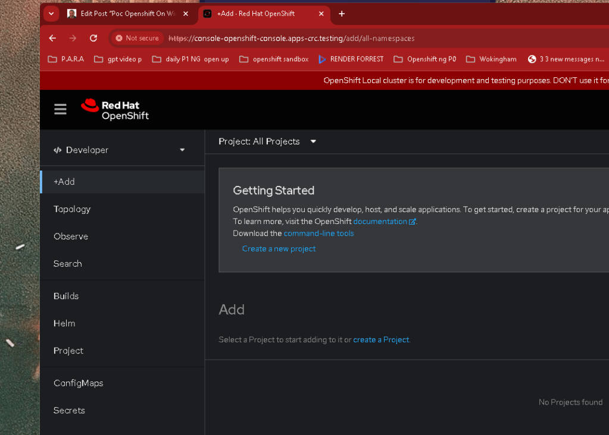
Conclusion
Setting up OpenShift on a Windows environment with CodeReady Containers is a powerful way to get hands-on experience with OpenShift without needing a full-blown cluster. By following these steps, you’ll have a local OpenShift instance up and running, ready for development and testing. Enjoy exploring OpenShift in your local environment!
Feel free to leave a comment or ask questions if you encounter any issues or need further clarification on the setup process.
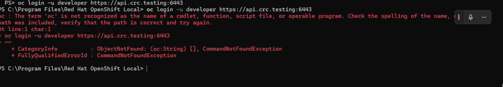
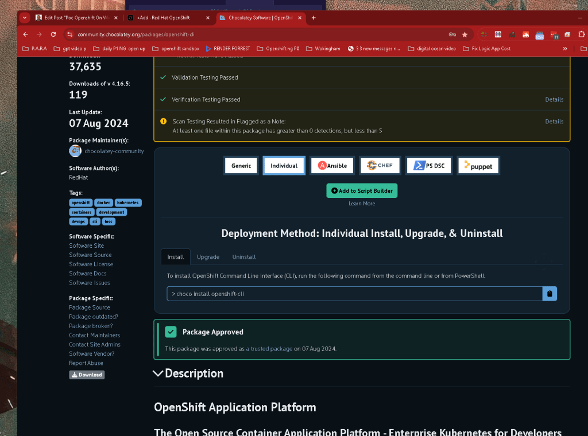
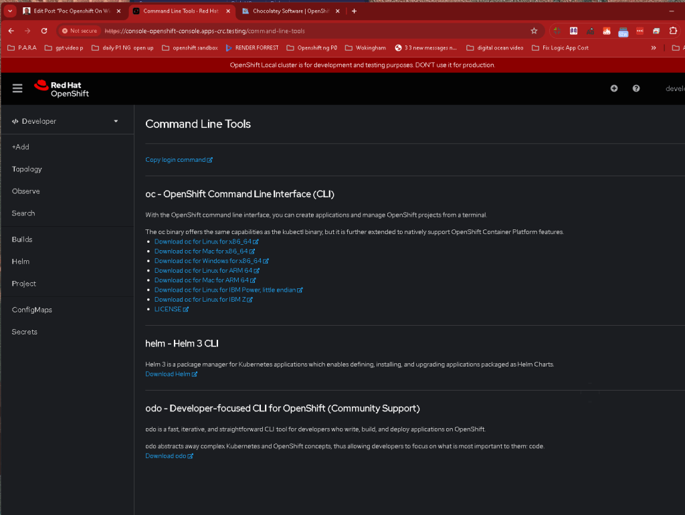
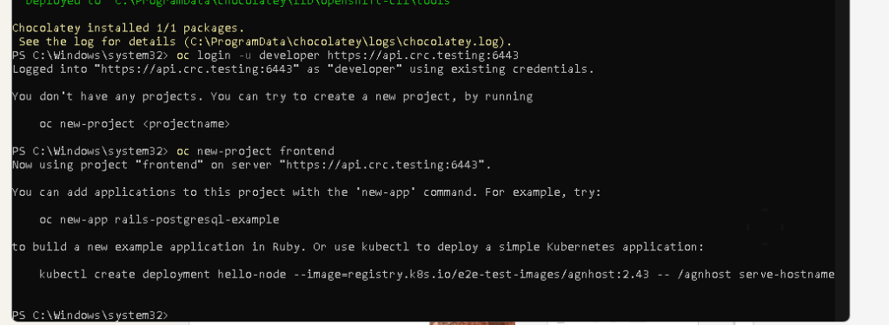
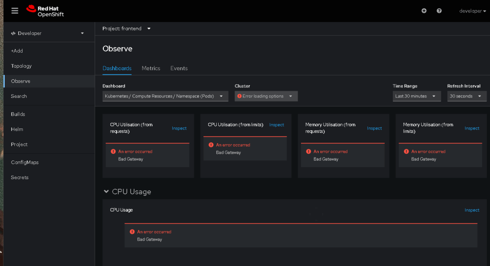
Imported from rifaterdemsahin.com · 2025